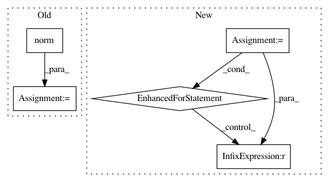

9902aaa77d03a2a5d1ccc3f8e260dfee2be86819,python/tests/test_embeddings.py,,test_normalize,#,123
Before Change
def test_normalize():
wv = random_model()(keep_unused=True)
normed = norm_weights(wv.weights)
norms = np.linalg.norm(normed, axis=1)
for norm in norms:
assert norm == 0 or np.allclose(norm, 1, rtol=1e-4)
After Change
wv = random_model()(keep_unused=True)
normed = norm_weights(wv.weights)
gold_norms = np.zeros_like(wv.weights)
for i in range(len(gold_norms)):
norm = np.sqrt(np.sum(np.square(wv.weights[i])))
gold_norms[i] = wv.weights[i] if norm == 0.0 else wv.weights[i] / norm
np.testing.assert_allclose(normed, gold_norms)
def test_vocab_truncation():
In pattern: SUPERPATTERN
Frequency: 3
Non-data size: 5
Instances
Project Name: dpressel/mead-baseline
Commit Name: 9902aaa77d03a2a5d1ccc3f8e260dfee2be86819
Time: 2018-06-19
Author: blester125@users.noreply.github.com
File Name: python/tests/test_embeddings.py
Class Name:
Method Name: test_normalize
Project Name: open-mmlab/mmdetection
Commit Name: 864880dea986041e90cf6e68bddabe32565ad372
Time: 2019-07-30
Author: chenkaidev@gmail.com
File Name: mmdet/models/utils/conv_module.py
Class Name: ConvModule
Method Name: forward
Project Name: mne-tools/mne-python
Commit Name: beaff02d91a80c2cf12e626d47b3f1678188472d
Time: 2020-04-22
Author: larson.eric.d@gmail.com
File Name: mne/source_space.py
Class Name:
Method Name: _get_volume_label_mask